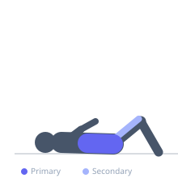

Exercise guide / Reverse Crunch
Reverse Crunch
The reverse crunch is a supine core exercise that targets the lower portion of the rectus abdominis by moving the pelvis toward the chest rather than the chest toward the pelvis. As the knees are drawn toward the face with posterior pelvic tilt, the lower abdominal fibers are trained through spinal flexion initiated from below. It is a spine-friendly alternative to full sit-ups and provides direct lower abdominal engagement without excessive hip flexor recruitment.
Primary muscles
rectus abdominis
Secondary muscles
transverse abdominis
iliacus
psoas major
Stabilizers
internal oblique
Equipment
No Equipment (Bodyweight)


Starting position
- Lie flat on your back with arms at your sides or holding a stable object overhead. Hips bent to 90 degrees, knees bent to 90 degrees, feet off the floor.
Setup
- Use a mat for comfort. Optionally hold a bench or heavy object behind the head for stability.
Steps
- Step 1: Lie supine with hips and knees both at 90 degrees, feet elevated.
- Step 2: Brace the core and exhale as you curl the knees toward the face by posteriorly tilting the pelvis.
- Step 3: The lower back and tailbone should lift off the floor at the top — this is what distinguishes it from a simple hip flexor lift.
- Step 4: Pause at the top position with maximum abdominal compression.
- Step 5: Lower with control back to the starting position.
Coaching cues
- Curl your tailbone toward the ceiling
- Think about bringing your knees to your nose
- The lower back comes off the floor — that is the goal
Breathing
- Exhale as the pelvis curls up. Inhale on the descent.
Range of motion
- The key ROM is the final phase where the lower back and tailbone lift off the floor. Full range = tailbone fully curled toward ceiling.
Tempo
- 2-1-2: 2 seconds concentric, 1 second pause, 2 seconds eccentric.
Common mistakes
- Lifting the knees without curling the pelvis — this is hip flexion, not a reverse crunch
- Using momentum to swing the legs rather than abdominal contraction
- Lowering too quickly and losing abdominal tension on the eccentric
Safety
- Keep the neck and shoulders relaxed on the floor throughout.
- Avoid if experiencing hip flexor tightness that causes lower back arching.
Training
- hypertrophy: 12–20 reps
- endurance: 20–30 reps
- hypertrophy: 3–4 sets
- endurance: 3–4 sets
- Rest: {'hypertrophy': 60, 'endurance': 45}